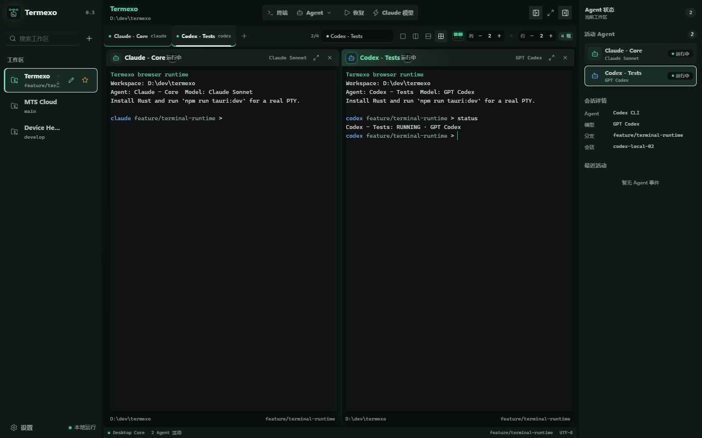
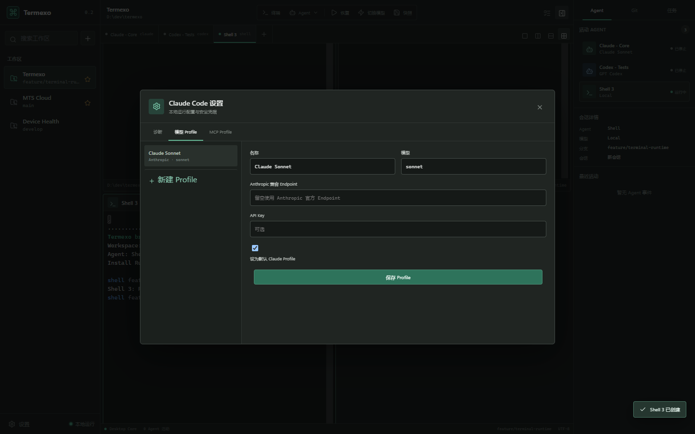

Keep every session available; choose panes on demand.
Local-first AI workspace control plane
One workspace. Every agent.
Run the complete Windows desktop app directly from npm, then coordinate coding terminals, native agent sessions, model providers, and recoverable project state in one focused environment.
PS
npx termexo@latest
Claude Code 1
Codex CLI 2
Shell 3
Claude Code 1Claude Sonnet
$ termexo agent status ● session running ● model claude-sonnet ● workspace MTS Cloud ◐ context restorable agent main >
Desktop Core7 agents activemain
Claude CodeCodex CLIMulti-accountDeepSeekMiniMaxGLMMCPNative PTY
01 / WORKBENCH
See the whole development field.
Keep unlimited terminal tabs, choose exactly which panes are visible, and move between projects without losing the state that explains what each agent is doing.
MTS Cloud / 4 agents
Configurable 2 × 2 grid

Persist row and column layouts per workspace.
Keep the CLI and switch compatible providers.
Workspaces and credentials stay local by default.
02 / CONTROL PLANE
More than terminal chrome.
Termexo adds the state, recovery, model configuration, and runtime visibility needed to operate several coding agents as one development system.
Workspace identity
Name, full desktop and terminal theme, order, project path, layout, terminals, branch, and model state stay attached to one durable workspace.
Native session recovery
Discover and resume native Claude Code and Codex CLI sessions from one read-only session center.
claude --resume · codex resume
Provider profiles
Keep Claude Code while routing to Anthropic, DeepSeek, MiniMax, GLM, or a compatible gateway, with missing-key repair built in.
Claude CoreRUNNING
Claude ReviewWAITING APPROVAL
Codex TestsTHINKING
Agent state you can act on
Normalize thinking, tool use, input, approval, completion, and failure across workspaces, including native Codex turn completion.
Provider Plan visibility
Track quota, reset windows, thresholds, and provider availability before model routing decisions.
Connected workspaces
Securely share workspace state and reach authorized terminals from trusted computers and phones.
MODEL ROUTING
Change the model, not the workflow.
Keep the CLI your team already understands. Termexo turns endpoint, model, API key, and MCP settings into explicit profiles that can be switched and recovered.
- Compatible provider profiles
- Credentials in Windows Credential Manager
- Missing-key repair and session-aware restart

03 / ROADMAP
From local control to trusted access.
The roadmap expands the same local-first workspace model without presenting planned capabilities as already shipped.
V0.3CURRENT
Multi-Agent session workbench
Claude and Codex detection, isolated multi-account launch and resume, configurable grids, profiles, and local persistence.
V0.4PLANNED
Multi-agent and provider control
Account and provider controls, one-click CLI lifecycle, internal-network and npm proxy profiles, failure rollback, and live Plan quota monitoring.
V0.5–0.6PLANNED
Context and orchestration
Session summaries, cross-agent migration, task routing, collaboration, and notifications.
V0.7PLANNED
Workspace sharing and remote access
Trusted devices, encrypted remote terminals, mobile approvals, granular roles, and audit logs.
04 / PRINCIPLES
Your machine remains the authority.
Remote capability should extend local ownership, never erase it. Termexo is designed around explicit trust boundaries from the start.
Local by default
Project paths, session indexes, terminal state, and configuration remain on the machine unless you explicitly share them.
Native agent semantics
Use each CLI's real resume and configuration mechanisms instead of inventing a fake universal session.
Revocable remote trust
Planned remote access uses paired devices, short-lived tokens, encryption, clear roles, and immediate revocation.
BUILD WITH US
Bring every coding agent into focus.
Start the complete Windows workspace directly from npm, or use the traditional installer and follow development on GitHub.